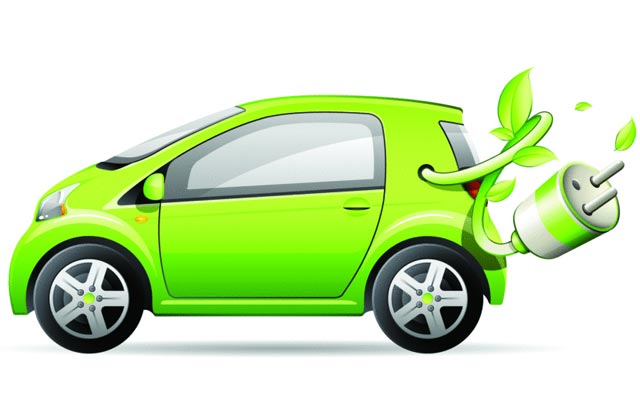

Research Areas
Overview
In the power systems control group, we are researching in 4 main themes: "Electric Vehicles", "Electric Machines and Drives", "Power Systems and Power Electronics", "Automatic Control".
Electric Vehicles (EV)
Recently, due to environmental and energy concerns, hybrid electric vehicles and electric vehicles, have been receiving more and more attention. Electric motor has much faster torque response than combustion engines, which allows feedback control to be applied. Our main focus is to develop more efficient, economical and reliable power electronics and automatic control technologies for the electric vehicles.
Electric Machines and Drives
The motivation of our research is to focus on the modeling, analysis, design and control of AC electric machines with adjustable speed drives. Wide-band gap devices and embedded systems technologies based on Texas Instrument DSP and Xilinx/Altera FPGA are used for development of the motor drive. systems.
Power Systems and Renewable Energy
Smart power grid is a modernized electric power grid that uses computing, communication, control technologies to gather and act on information, such as information about the behaviors of suppliers and consumers, in an automated fashion to improve the efficiency, reliability, economics, and sustainability of the production and distribution of electricity. In the smart power grid systems, the renewable energy resources are connected to the grid as distributed energy resources. Our research topics include: Power Transmission and Distribution, Power System Design, Analysis, Protection and Control, Power Electronics and Control for Wind and Photovoltaic Energy Generation and Transmission Systems, Power System Transients, Generator Protection and Control.
Automatic Control, Robotics and Mechatronics
The work performed is focused on the creation of automatic control technologies which reveal advanced systems of mechatronics and robotics. We place a strong emphasis both on theoretic research and hardware experimentation for addressing fundamental and open real-world technological problems. Specifically, our research is focused on: Optimal and Robust Control, Nonlinear Control, Adaptive Control, Model Predicative Control, Nonlinear Programming and Convex Optimization.